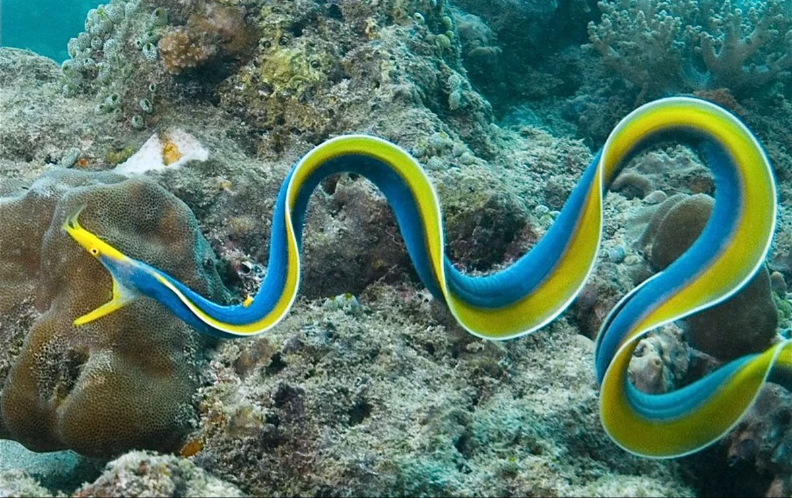
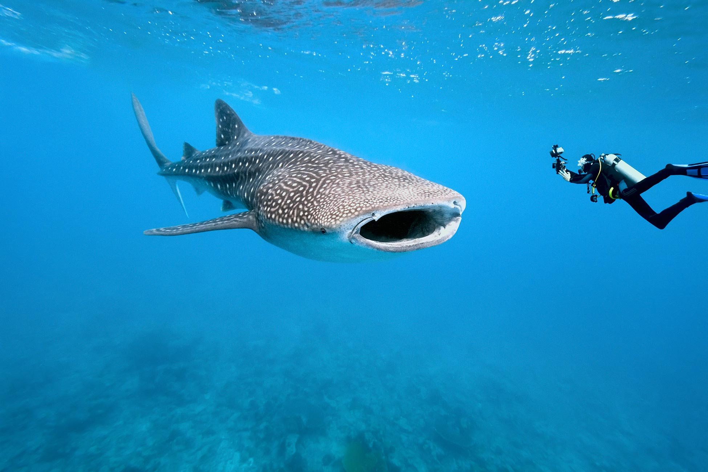
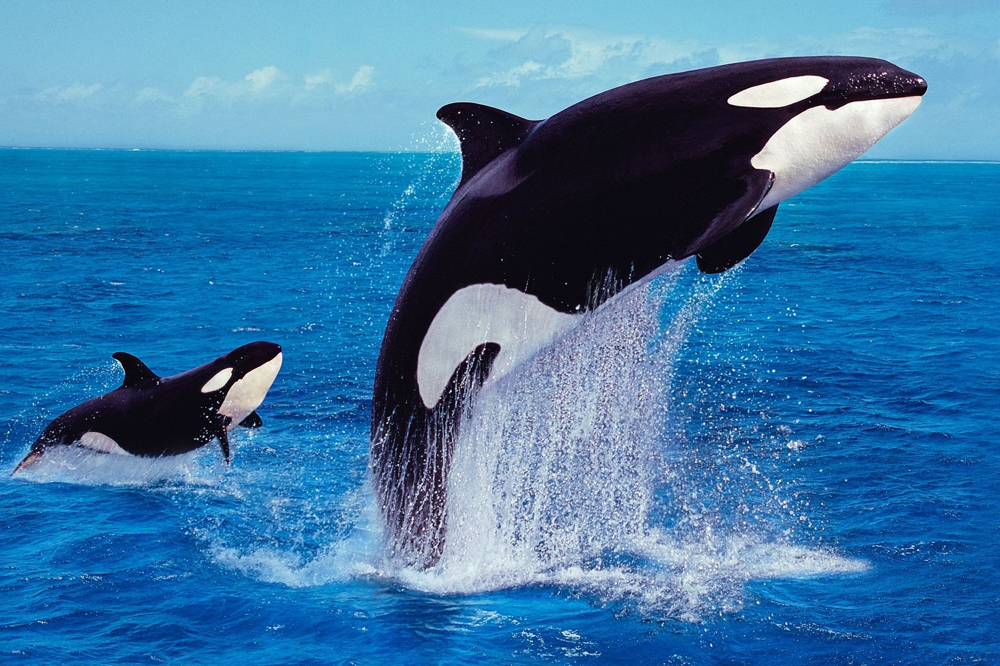
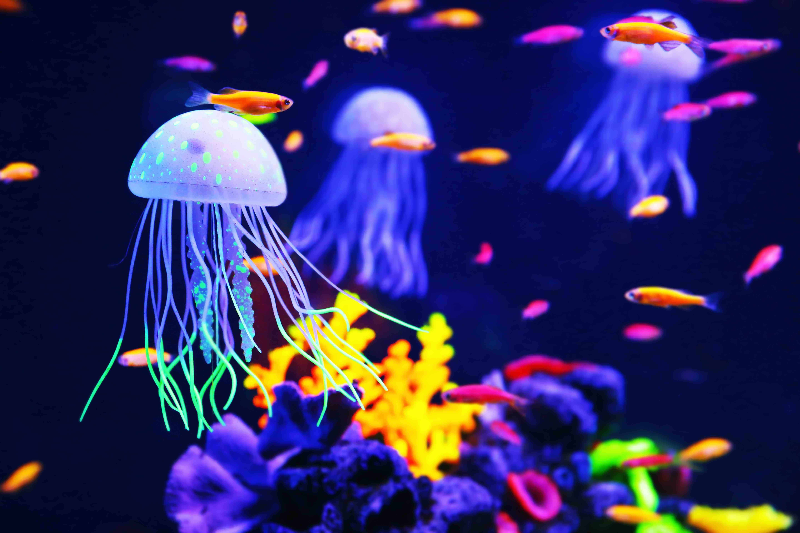

SEA TURTLE-Sea turtles Sea turtles (superfamily Chelonioidea), sometimes called marine turtles, are reptiles of the order Testudines and of the suborder Cryptodira. The seven existing species of sea turtles are the flatback, green, hawksbill, leatherback, loggerhead, Kemp's ridley, and olive ridley. Six of the seven sea turtle species, all but the flatback, are present in U.S. waters, and are listed as endangered and/or threatened under the Endangered Species Act. They are listed as threatened with extinction globally on the IUCN Red List of Threatened Species. The flatback turtle is found only in the waters of Australia, Papua New Guinea, and Indonesia.

RIBBON EEL-The ribbon eel (Rhinomuraena quaesita), also known as the leaf-nosed moray eel or bernis eel, is a species of moray eel, the only member of the genus Rhinomuraena. The ribbon eel is found in sand burrows and reefs in the Indo-Pacific Ocean. Although generally placed in the moray eel family Muraenidae, it has several distinctive features leading some to place it in its own family, Rhinomuraenidae.

WHALE SHARK-The whale shark (Rhincodon typus) is a slow-moving, filter-feeding carpet shark and the largest known extant fish species. The largest confirmed individual had a length of 18.8 m (61.7 ft). The whale shark holds many records for size in the animal kingdom, most notably being by far the most massive living non-cetacean animal. It is the sole member of the genus Rhincodon and the only extant member of the family Rhincodontidae, which belongs to the subclass Elasmobranchii in the class Chondrichthyes. Before 1984 it was classified as Rhiniodon into Rhinodontidae.

ORCA-The orca (Orcinus orca), or killer whale, is a toothed whale and the largest member of the oceanic dolphin family. The only extant species in the genus Orcinus, it is recognizable by its black-and-white patterned body. A cosmopolitan species, it inhabits a wide range of marine environments, from Arctic to Antarctic regions to tropical seas. Orcas are apex predators with a diverse diet.

FLYING FISH-The Exocoetidae are a family of marine ray-finned fish in the order Beloniformes, known colloquially as flying fish or flying cod. About 64 species are grouped in seven genera. While they do not "fly" in the same way a bird does, flying fish can make powerful leaps out of the water where their long wing-like fins enable gliding for considerable distances above the water's surface. The main reason for this behavior is thought to be to escape from underwater predators, which include swordfish, mackerel, tuna, and marlin, among others, though their periods of flight expose them to attack by avian predators such as frigate birds.

BAKSET STAR-Many of the species in this order have characteristic repeatedly branched arms (a shape known as "basket stars", which includes most Gorgonocephalidae and two species in the family Euryalidae), while the other species have very long and curling arms, and go rather by the name of "snake stars" (mostly abyssal species). Many of them live in deep sea habitats or cold waters, though some basket stars can be seen at night in shallow tropical reefs. Most young basket stars live on specific type of coral. In the wild they may live up to 35 years. They weigh up to 5 kilograms (11 lb). Like other echinoderms, basket stars lack blood and achieve gas exchange via their water vascular system.

"JELLYFISH-Jellyfish, also known as sea jellies or simply jellies, are the medusa-phase of certain gelatinous members of the subphylum Medusozoa, which is a major part of the phylum Cnidaria. Jellyfish are mainly free-swimming marine animals, although a few are anchored to the seabed by stalks rather than being motile. They are made of an umbrella-shaped main body made of mesoglea, known as the bell, and a collection of trailing tentacles on the underside./p>